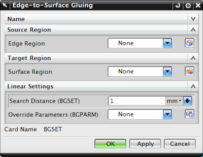

可使用边到面粘合仿真对象将边连接到面，以防止任何方向的相对运动。NX Nastran 粘合连接是连接不同网格的一种简单有效的方法。
粘合连接将正确地传递位移和载荷，即在接口处生成精确的应变和应力条件。
要将边粘连到面，首先必须定义粘连定义的源区域和目标区域。区域是您期望发生粘合或接触的模型截面上的单元边或自由面的集合。这些区域可以使用壳单元以及实体单元的自由面来创建。使用仿真区域命令定义受粘连条件影响的区域。
可选择 2D 或 3D 单元的边来定义源区域的边
可选择 3D 单元的面或 2D 单元来定义目标区域的曲面
粘合边或粘合曲面上的节点不一定要重合。

求解模型时，NX Nastran 在定义的源区域和目标区域之间生成粘连单元。粘连单元就像刚性弹簧一样连接、约束边和曲面。NX Nastran 始终使用类似于焊接用途的公式创建这种连接。这对应于 BGPARM 模型数据输入项的 GLUETYPE=2 选项。
边到面粘合可用于除 SOL 601 和 701 以外的所有结构 NX Nastran 解算序列。轴对称解算方案不支持该类型。